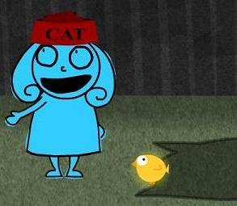
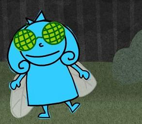
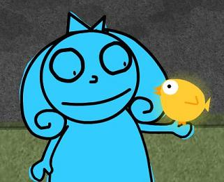

I had a good time last night. After returning from Ohio yesterday, I came into Athens and Kyle, Paul, and Matt were at Agua Linda. I came along and munched on some chips, and then went home. They all came over at 11 and we watched Adult Swim and had some Bacardi Limon. Yummy.
Ah, I haven't had a buzz like that in a while. Wavy and everything. Hit the spot. So yah, here I am. Did anyone know I was going to Ohio? Not many people knew, it was this huge effort to surprise my mom. Jen and I were successful, and enjoyed a nice weekend camping in rural Ohio. There were so many bugs! And at one point, we saw a nasty snake climbing a tree to eat some poor unsuspecting bird. Sadness. Jen and I had S'mores, eggs, toast, and lots of water. We stayed in a very nice cabin for the two nights we were camping. It was perfect! Cool, comfortable, and very homey...just one problem: NO BATHROOM! Yah, we had to shower in a dank excuse for a public restroom. It wasn't pretty.
I may have mentioned we took Lily around. I also may have mentioned she didn't like that one bit. Here's the proof. Click the picture for more of the story (or click here). I had a really great time. I'm glad I went, but then again, I'm glad I'm back. I've got alot of things to do here. I'm sick of all these vacations. Back to life, back to reality, you know? I've got work to do.
I bought some stuff when I was gone. I got my long awaited Yoshimi DVD AND The Soft Bullitin. That was the Flaming Lips album from 1999. It's alright. I'm diggin' "Buggin'" at the moment, even though I've heard it on the Austin Powers 2 soundtrack. I didn't like it that much then, but I like it now. I may listen to my Yoshimi DVD at Paul's in the near future. Until them, I'm running to and from Blockbuster listening to "Fight Test". Hehehe, you know what they say.
The test begins...NOW!
Isn't it annoying how days go by? I swear, I still think it's April. I wish it still was. Would love the occasional stressful Fink session. Also, I guess it was kind of cool having the pressure on w/ no car and everything. You know, I felt like riding my bike made me special or something, you know?
No, wait. I like the car better.
Oh, and besides on the front of my t-shirt, has anyone seen Charlotte?
Sadly, it appears we have reached the last tooth in the fiend's mouth. The end (of season one it seems) has come. This episode is pretty good, and it brings the whole of the series to a satisfying conclusion, even if it's a bit sad. It's nice seeing a good round up of fiends for the last hurrah. She should release a fiend shirt, more then just the big kitty. The fleas with knives would be cool, fo sho! Speaking of shirts, I finally received my shirts this week. I showed them off at work, and I think Grace appreciated them. I think I'm at the bottom of the barrell, t-shirt wise, with Grace. All I've got left is Yoshi I believe. Unless I can find a good shirt that knocks my socks off, I'll be wearing the same old stuff to work. It was a good run, though. I bet she thought I had a shirt for every day :-)

Well, back to the episode. I'd give it 4 stars...certainly not the best, but better than the incredibly shrinking Charlotte. Check it out. It's worth your time, I promise.
In other me news, things have been pretty quiet. I'm working alot, this week is my first week working until 1 a.m. I'm doing that so that I don't need to work on Saturdays, which has proved increasingly to be a bore-fest. It's nice having money. I can buy food and I don't have to scrounge around for things like pain killers when I get monster migraines driven by STRESS, which has not surprisingly been a real factor, especially in the last few weeks. Maybe when my head explodes, they'll all feel bad.
I'm not really looking forward to the Fall semester. I mean, sort of, it will be nice to have more things to do, but I imagine there will be alot of stress. Just thinking that less then a year I'll be in my career! That begs the question, "How?!" Yah, I know. Good news though, I've been published again. You can read the article...well, when the website decides to start working again. For now, I'm going to meander elsewhere. Don't be a stranger!

"She was obsessed...Just like I am obsessed... ~Kikyo